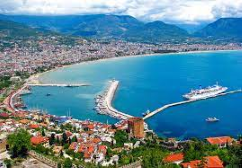
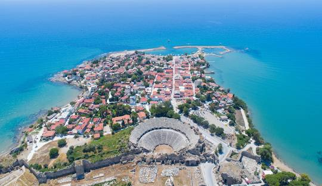

{% extends "layout.html" %}

{% block r_query %}
{% load i18n %}
<style>
    .carousel-inner{
        clip-path: ellipse(100% 100% at 50% 0%);
    }
    .carousel-inner img {
        max-width: 100%;
        height: auto; 
    }
    @media (max-width: 640px) {
        .carousel-inner {
            margin-top: 43px;
        }
    }
</style>

<div class="carousel-inner">
    <div class="carousel-item active" >
        
        <div class="carousel-caption d-flex flex-column justify-content-center h-100 text-start"> 
            <h5 style="font-size: 20px; color: #C19A6B;">
                <span class="border border-secondary-subtle border-3 p-3 rounded" style="display: inline-block; backdrop-filter: blur(5px); background-color: rgba(255, 255, 255, 0.1); padding: 8px; border-radius: 8px;">
                    {% trans "GALERİ" %}
                </span>
            </h5>
        </div>
    </div>
</div>

{% endblock%}

{% block body %}
<style>
    .img-thumbnail {
        width: 250px;
        height: 150px;
        object-fit: cover; 
      }
    .col-sm-3 img {
        transition: transform 0.5s, box-shadow 0.5s;
    }
    .col-sm-3 img:hover {
        transform: scale(1.5);
        box-shadow: 0px 0px 10px rgba(0, 0, 0, 0.3);
    }
</style>

<div class="container text-center">
    <div class="row align-items-center">
        <div class="col-6 col-sm-3">
            
        </div>
        <div class="col-6 col-sm-3">
            
        </div>
        <div class="col-6 col-sm-3">
            
        </div>
        <div class="col-6 col-sm-3">
            
        </div>
    </div>
</div>

{% endblock %}